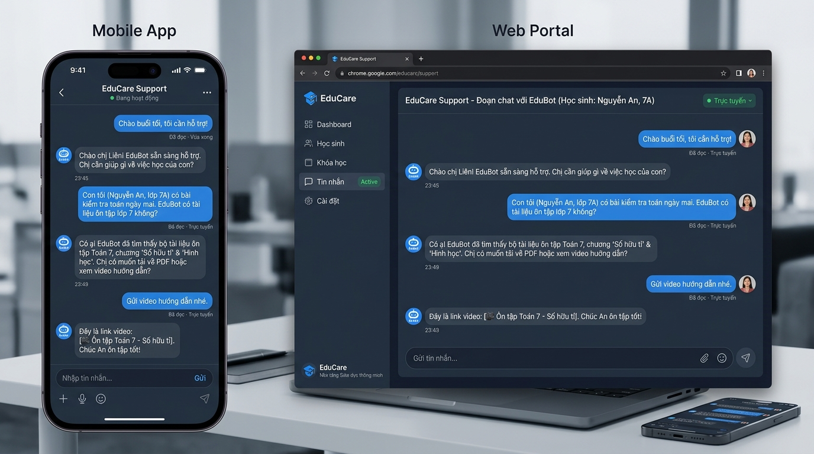
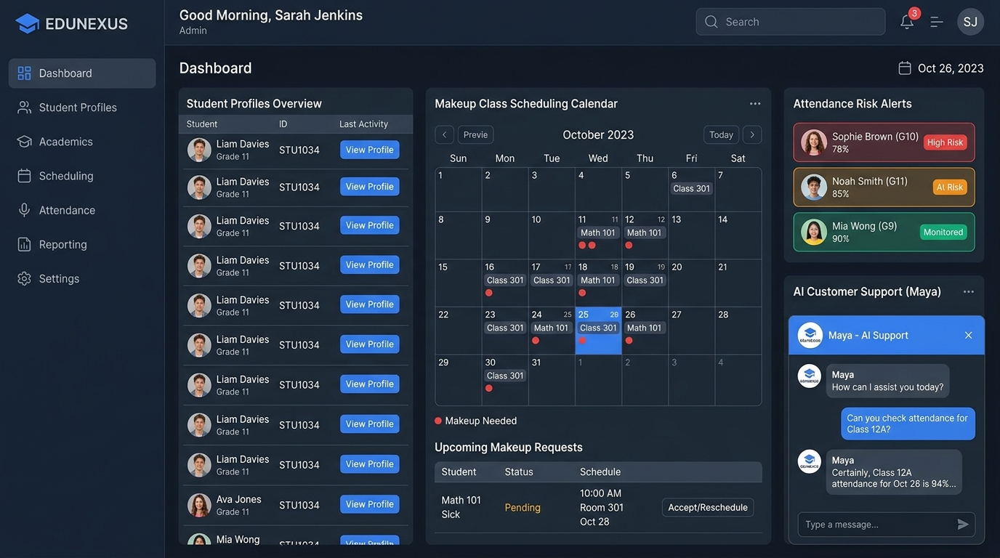

Điểm Nghẽn CSKH & Quản Trị Học Viên Sau Tuyển Sinh (Post-Sales)
Tại các trung tâm đào tạo và trường học, 80% doanh thu bền vững đến từ việc giữ chân học viên và tái tục khóa mới. Tuy nhiên, đội ngũ hỗ trợ đang bị quá tải bởi các tin nhắn chat thủ công hàng ngày.
Quá Tải Xin Nghỉ & Xếp Học Bù Qua Chat
Phụ huynh nhắn tin đột xuất xin nghỉ và đòi bù lịch. Nhân sự phải mở 3–4 màn hình để kiểm tra lớp cùng trình độ, kiểm tra sĩ số còn chỗ và dò lịch trống.
Thiếu Kênh Trả Lời 24/7 Báo Cáo Tình Hình Kết Quả Học Tập
Phụ huynh sốt ruột muốn biết điểm thi, học lực và nhận xét của giáo viên. Giáo vụ phải liên hệ thầy cô và tổng hợp thủ công nhiều ngày, phụ huynh chờ lâu sinh bất an.
Chưa Tự Đề Xuất Chiến Dịch Marketing & Khóa Học Tiếp Nối
Khi học sinh sắp hoàn thành khóa hoặc có kỹ năng còn yếu, trung tâm thiếu cơ chế tự động đề xuất sự kiện ưu đãi, lộ trình nâng cao và voucher khóa học tiếp theo.
Khủng Hoảng Khiếu Nại Không Được Chuyển Giao Kịp Thời
Học viên bức xúc vì sự cố phòng ốc hay lỗi nộp bài. Chatbot thông thường trả lời máy móc làm khách giận hơn, không kết nối ngay được với Quản lý trung tâm.

Phụ huynh chủ động nhắn qua Web Portal hoặc Mobile App (PWA). AI hiểu ngay và giải quyết dứt điểm yêu cầu trong cuộc trò chuyện.
Mô Hình Hoạt Động: Người Học Nhắn Chat ➔ AI Giải Quyết Dứt Điểm
Phân định rõ ràng: Trợ lý AI Orchexa là Người Tư Vấn & Xử Lý Nghiệp Vụ, EduCenter là Kho Dữ Liệu Thực Tế Của Nhà Trường.
Phụ huynh truy cập trên máy tính hoặc trình duyệt điện thoại, nhắn tin tự nhiên như trao đổi với giáo vụ.
Cài đặt trực tiếp từ web không qua app store rườm rà; tra cứu điểm số, lịch thi, nộp đơn nghỉ học 24/7.
Không spam thông báo tự động; chỉ tập trung phản hồi nhanh nhất khi có câu hỏi thực tế.
Phân biệt câu hỏi thường ngày với khiếu nại bức xúc để có thái độ ứng xử đúng mực.
Chỉ xếp lớp bù khi đủ điều kiện nghỉ có phép; tự động đề xuất ưu đãi khóa học tiếp nối hợp lệ.
Gặp ca khó hoặc khách hàng yêu cầu gặp quản lý, AI lập tức chuyển giao trong 2 giây.
Đảm bảo lớp học bù còn ghế trống; không để xảy ra tình trạng thiếu chỗ ngồi.
Tổng hợp điểm thi, GPA, nhận xét của giáo viên để xuất báo cáo PDF/Preview tức thì.
Cập nhật ngay danh sách điểm danh và lịch học bù vào hồ sơ của học sinh.
5 Tình Huống CSKH Thực Tế Được Giải Quyết Trọn Vẹn Qua Chat
Tất cả các tình huống đều được phụ huynh và học viên chủ động nhắn hỏi trên Web Portal & Mobile App (PWA).
Xin Nghỉ Phép & Tự Động Xếp Lịch Học Bù
Tiết kiệm 90% thời gianPhụ huynh nhắn xin nghỉ ➔ AI tự tra cứu lớp, tìm ca học bù cùng trình độ còn trống chỗ vào cuối tuần, gửi phụ huynh chọn và chốt lịch ngay trong 30 giây.
Trả Lời 24/7 Báo Cáo Kết Quả Học Tập & Chuyên Cần
Xuất PDF/PreviewPhụ huynh hỏi tình hình học ➔ AI trích xuất điểm thi thật, GPA, nhận xét chi tiết của thầy cô và gửi link xem trước / xuất bản PDF trực quan tức thì.
Tự Đề Xuất Chiến Dịch Marketing & Khóa Học Tiếp Nối
Tăng 15–20% Tái TụcHọc viên sắp hoàn thành khóa hoặc có kỹ năng còn yếu ➔ AI tự gợi ý môn nâng cao, gửi voucher ưu đãi (Carousel Card) và hỗ trợ đăng ký giữ chỗ.
Xử Lý Khiếu Nại Bức Xúc & Nối Máy Cho Quản Lý
Handoff < 2 giâyPhụ huynh gắt gỏng vì sự cố cơ sở vật chất ➔ AI nhận diện thái độ, xoa dịu, lập tức dừng tự động và chuyển trọn vẹn cuộc trò chuyện sang Quản lý cơ sở để gọi lại ngay.
Hỏi Học Phí & Xác Nhận Chuyển Khoản
Minh bạch tiền bạcPhụ huynh vừa chuyển 5 triệu hỏi sao chưa cập nhật ➔ AI tra cứu trạng thái ngân hàng, giải thích độ trễ đối soát, xin ảnh biên lai; tuyệt đối không xác nhận bừa.

Mọi yêu cầu học bù, đổi lớp, hay khiếu nại qua chat đều được đồng bộ tức thì vào bảng điều khiển để giáo vụ theo dõi.
Chi Tiết Trải Nghiệm Chat: Xếp Học Bù & Báo Cáo Học Tập Kèm Ưu Đãi
Người dùng nhắn tin tự nhiên qua Web Portal hoặc Mobile App (PWA) ➔ AI xử lý nghiệp vụ thông minh ➔ Phản hồi chính xác hoặc kết nối quản lý ngay lập tức.
Xếp Học Bù Tự Động Cho Bé Nhật Minh
"Hôm nay thứ 3 bé Minh sốt xin nghỉ. Cuối tuần này có lớp Movers nào trống cho bé học bù không em?"
Phụ huynh chọn ca sáng CN ➔ Hệ thống chốt danh sách, gửi lịch học và tên phòng cho mẹ. Giáo vụ không cần mất 30 phút dò sổ sách.
Báo Cáo Học Tập & Đề Xuất Ưu Đãi Khóa Mới
"Gửi cho tôi bảng điểm thi giữa kỳ vừa rồi và tình hình học của cháu. Con sắp hết khóa rồi, trung tâm có khóa tiếp theo nào không?"
Phụ huynh bấm "Nhận voucher" ➔ AI hỗ trợ giữ chỗ lớp mới ngay trên giao diện chat. *(Khiếu nại bức xúc vẫn kích hoạt Handoff < 2s tới Quản lý)*.
Giá Trị Mang Lại Cho Phụ Huynh, Nhân Viên & Ban Giám Đốc
Giải pháp không chỉ tiết kiệm chi phí mà còn trực tiếp nâng cao trải nghiệm phụ huynh và giữ chân học viên lâu dài.
Giá Trị Cho Từng Đối Tượng
Đối Với Phụ Huynh & Học Sinh
Được phản hồi ngay lập tức 24/7 qua Web Portal & Mobile App (PWA); không còn cảnh chờ đợi nửa ngày để xin nghỉ, hỏi điểm hay nhận xét; an tâm tuyệt đối.
Đối Với Đội Ngũ CSKH & Giáo Vụ
Trút bỏ 80% gánh nặng trả lời các câu hỏi lặp đi lặp lại về lịch học, học phí, điểm số; có thêm thời gian để chăm sóc chuyên sâu các học viên cần hỗ trợ.
Đối Với Ban Giám Đốc & Chủ Trung Tâm
Tăng 15–20% tỷ lệ tái tục khóa mới nhờ cơ chế tự đề xuất chiến dịch marketing thông minh; ngăn chặn nguy cơ khủng hoảng khiếu nại dịch vụ ngay từ sớm.
Chỉ Số Đo Lường Hiệu Quả Thực Tế
Trợ lý AI giúp trung tâm vận hành chuyên nghiệp hơn, tạo thiện cảm mạnh mẽ với phụ huynh ngay từ lần nhắn tin đầu tiên.